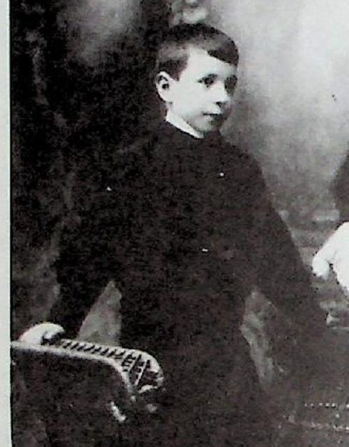
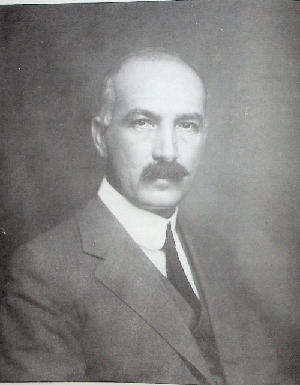
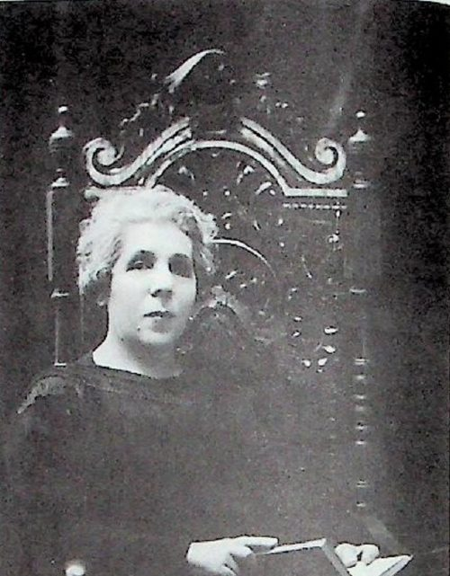
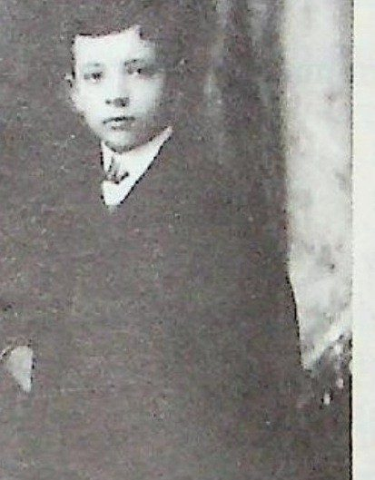
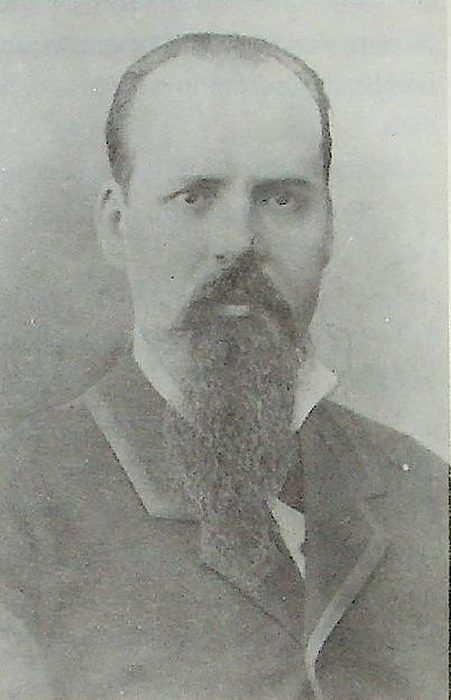
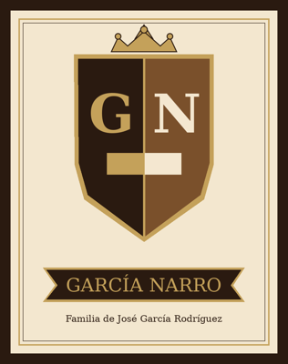
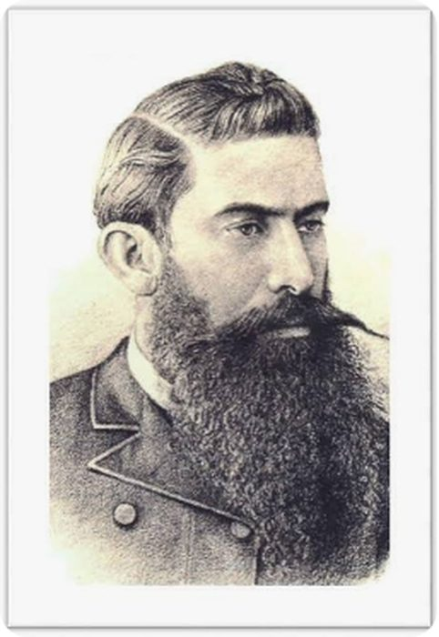
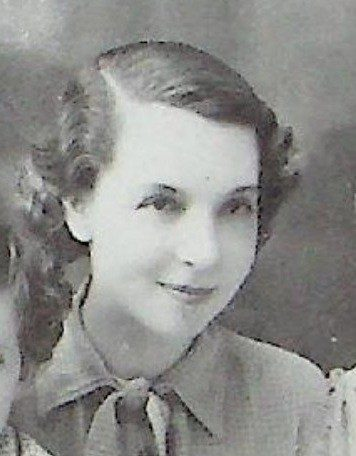
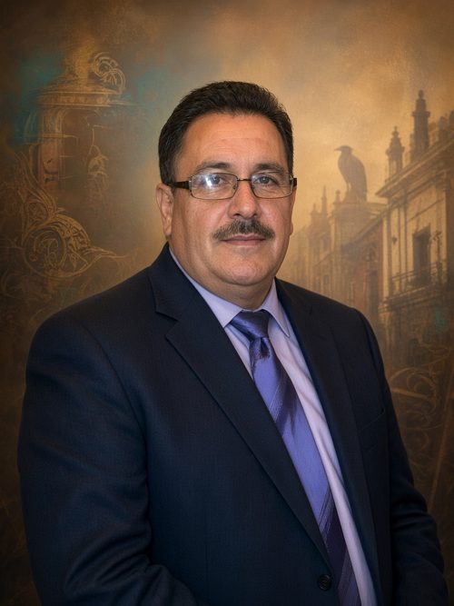

Portada
De Enciclopedia MediaWiki, la enciclopedia libre
Bienvenidos a la Enciclopedia MediaWiki
la enciclopedia libre de información histórica y personas ilustres. Hay 77 artículos.
Artículo destacado
Capitán Blas de la Garza Falcón fue un militar y poblador novohispano del siglo XVII, figura fundacional del linaje Garza en el Nuevo Reino de León. Leer más…
Personas ilustres

Alfredo Garza Falcón

Alférez Lorenzo García
Ana María Gertrudis Ramírez

Antonio García Narro
Antonio García de León

Aurora García Lozano
Beatriz Villarreal de la Garza

Blas de la Garza Falcón
Capitán Blas María de la Garza Falcón
Cristóbal García Reyes
Dionisio García Carrillo

Don José García Rodríguez
Dorotea Lozano García

Doña María Narro Valdés de García Rodríguez

Dr. Dionisio García Fuentes
Dr. Jesús García Fuentes
Encarnación de Palacio y Uro

Fernando García Narro
Francisca Vázquez Delgado
Francisca Xaviera Ramos
Francisco Antonio Garza González
Francisco García de la Peña
Francisco de la Garza Uro
General Blas de la Garza Falcón
Gertrudis Saucedo
Hermilo García García
Jacoba de la Peña Saucedo
Jesús García Flores
Jesús García Saucedo
Jonás García Castilleja
José Antonio García Guajardo

José Antonio Narro Rodríguez
José Bartolomé García García
José Francisco de la Garza Villarreal
José García Morales

José García Narro
José García de la Garza
José María de la Garza
José Santiago García (Cantú / Flores)
José Valentín de la Garza
Juan José Luis García Ramos
Juana de la Garza González
Leonides García Ramos

Lic. Antonio García Carrillo

Lic. Dionisio García Narro

Lic. Francisco Javier García Gaona

Lic. Praxedis de la Peña García
Lorenzo García Gutiérrez
Los García Castilleja
Los Garza García
Macaria Castilleja Sánchez
Margarito García Vázquez
Martiniano Garza Valdez
María Catarina Gómez Báez
María Clara Valdez Rubio
María García García
María Guadalupe Flores Villarreal
María Josefa Guajardo Galindo
María Rita Hinojosa González
María Rosalía González Quiros
María de Morales

María de la Luz García Narro de López Villarreal

María del Carmen García Narro de Narro

María del Rosario García Narro de López Villarreal
Miguel José García Ramírez
Nemesio García y García

Noé Fernando Garza Flores
Pedro García Guajardo
Pedro Regalado García Guajardo
Ramona Falcón Ruiz
Ramona Gaona Samaniego
Romualdo García López
Rosalía Flores Mireles
Santos García Hinojosa

Santos Javier Garza García
Vicente García Salinas
Todos los artículos
- Alfredo Garza Falcón
- Alférez Lorenzo García
- Ana María Gertrudis Ramírez
- Antonio García Narro
- Antonio García de León
- Aurora García Lozano
- Beatriz Villarreal de la Garza
- Blas de la Garza Falcón
- Capitán Blas María de la Garza Falcón
- Cristóbal García Reyes
- Dionisio García Carrillo
- Don José García Rodríguez
- Dorotea Lozano García
- Doña María Narro Valdés de García Rodríguez
- Dr. Dionisio García Fuentes
- Dr. Jesús García Fuentes
- Encarnación de Palacio y Uro
- Fernando García Narro
- Francisca Vázquez Delgado
- Francisca Xaviera Ramos
- Francisco Antonio Garza González
- Francisco García de la Peña
- Francisco de la Garza Uro
- General Blas de la Garza Falcón
- Gertrudis Saucedo
- Hermilo García García
- Historia regional y familiar
- Jacoba de la Peña Saucedo
- Jesús García Flores
- Jesús García Saucedo
- Jonás García Castilleja
- José Antonio García Guajardo
- José Antonio Narro Rodríguez
- José Bartolomé García García
- José Francisco de la Garza Villarreal
- José García Morales
- José García Narro
- José García de la Garza
- José María de la Garza
- José Santiago García (Cantú / Flores)
- José Valentín de la Garza
- Juan José Luis García Ramos
- Juana de la Garza González
- Leonides García Ramos
- Lic. Antonio García Carrillo
- Lic. Dionisio García Narro
- Lic. Francisco Javier García Gaona
- Lic. Praxedis de la Peña García
- Lorenzo García Gutiérrez
- Los García Castilleja
- Los Garza García
- Macaria Castilleja Sánchez
- Margarito García Vázquez
- Martiniano Garza Valdez
- María Catarina Gómez Báez
- María Clara Valdez Rubio
- María García García
- María Guadalupe Flores Villarreal
- María Josefa Guajardo Galindo
- María Rita Hinojosa González
- María Rosalía González Quiros
- María de Morales
- María de la Luz García Narro de López Villarreal
- María del Carmen García Narro de Narro
- María del Rosario García Narro de López Villarreal
- Miguel José García Ramírez
- Nemesio García y García
- Noé Fernando Garza Flores
- Pedro García Guajardo
- Pedro Regalado García Guajardo
- Ramona Falcón Ruiz
- Ramona Gaona Samaniego
- Romualdo García López
- Rosalía Flores Mireles
- Santos García Hinojosa
- Santos Javier Garza García
- Vicente García Salinas